Abstract
حساسات حافة الانتقال فائقة التوصيل (TESs) نوع من الحساسات الكمومية المعروفة بكفاءتها العالية في كشف الفوتونات المفردة وبخلفيتها المنخفضة. وهذا يجعلها مثالية لتجارب فيزياء الجسيمات التي تبحث عن أحداث نادرة. في هذا العمل، نقدم توصيفا شاملا للخلفية في حساسات TES البصرية، مع التمييز بين ثلاثة أنواع من الأحداث: الضجيج الكهربائي، والأحداث العالية الطاقة، والأحداث الشبيهة بالفوتونات. ونقدم طرائق حاسوبية لأتمتة تصنيف الأحداث. وللمرة الأولى، نتحقق تجريبيا ونحاكي مصدر الأحداث العالية الطاقة. كما نعزل الأحداث الشبيهة بالفوتونات، وهي الإشارة المتوقعة في الهالوسكوبات العازلة الباحثة عن الفوتونات المظلمة بوصفها مادة مظلمة، ونحقق معدلا قياسيا منخفضا للعدّ المظلم الشبيه بالفوتونات مقداره 3.6d − 4 Hz في مجال الطاقة 0.8–3.2 eV.
العدّات المظلمة في حساسات حافة الانتقال فائقة التوصيل البصرية في عمليات البحث عن الأحداث النادرة
Laura Manenti laura.manenti@nyu.edu Division of Science, New York University Abu Dhabi, United Arab Emirates Center for Astrophysics and Space Science (CASS), New York University Abu Dhabi, United Arab Emirates Carlo Pepe Dipartimento di Elettronica Telecomunicazioni Politecnico di Torino, Corso Duca degli Abruzzi 24, 10129 Torino, Italy INRiM, Istituto Nazionale di Ricerca Metrologica, Strada delle Cacce, 91 – 10135 Torino, Italy INFN Sezione di Torino - Torino, Italy Isaac Sarnoff sarnoff@nyu.edu Division of Science, New York University Abu Dhabi, United Arab Emirates Center for Astrophysics and Space Science (CASS), New York University Abu Dhabi, United Arab Emirates Tengiz Ibrayev Division of Science, New York University Abu Dhabi, United Arab Emirates Center for Astrophysics and Space Science (CASS), New York University Abu Dhabi, United Arab Emirates Panagiotis Oikonomou Division of Science, New York University Abu Dhabi, United Arab Emirates Center for Astrophysics and Space Science (CASS), New York University Abu Dhabi, United Arab Emirates Artem Knyazev Division of Science, New York University Abu Dhabi, United Arab Emirates Center for Astrophysics and Space Science (CASS), New York University Abu Dhabi, United Arab Emirates Eugenio Monticone INRiM, Istituto Nazionale di Ricerca Metrologica, Strada delle Cacce, 91 – 10135 Torino, Italy Hobey Garrone Dipartimento di Elettronica Telecomunicazioni Politecnico di Torino, Corso Duca degli Abruzzi 24, 10129 Torino, Italy INRiM, Istituto Nazionale di Ricerca Metrologica, Strada delle Cacce, 91 – 10135 Torino, Italy Fiona Alder Dept. of Physics and Astronomy, University College London, Gower Street, London, United Kingdom Osama Fawwaz Division of Science, New York University Abu Dhabi, United Arab Emirates Center for Astrophysics and Space Science (CASS), New York University Abu Dhabi, United Arab Emirates Alexander J. Millar Theoretical Physics Division, Fermi National Accelerator Laboratory, Batavia, IL 60510, USA Fermi National Accelerator Laboratory, Batavia, IL 60510, USA Knut Dundas Morå Physics Department, Columbia University, New York, New York 10027, USA Hamad Shams Division of Science, New York University Abu Dhabi, United Arab Emirates Center for Astrophysics and Space Science (CASS), New York University Abu Dhabi, United Arab Emirates Francesco Arneodo Division of Science, New York University Abu Dhabi, United Arab Emirates Center for Astrophysics and Space Science (CASS), New York University Abu Dhabi, United Arab Emirates Mauro Rajteri INRiM, Istituto Nazionale di Ricerca Metrologica, Strada delle Cacce, 91 – 10135 Torino, Italy1 مقدمة
حساسات حافة الانتقال فائقة التوصيل (TESs) هي ميكروكالوريمترات بالغة الحساسية، قادرة على كشف أحداث الفوتون المفرد والمتعدد بكفاءة قريبة من الواحد [Irwin(1995)]. تعمل معظم حساسات TES دون 𝒪(1K)، عند نقطة الانتقال بين حالتيها فائقة التوصيل والعادية، ويمكن تكييفها مع مجالات أطوال موجية مختلفة، تمتد من الأشعة السينية إلى الأشعة تحت الحمراء.
تستخدم عدة تجارب في فيزياء الجسيمات، أو تخطط لاستخدام، حساسات TES في عمليات البحث عن الأحداث النادرة في المجال 𝒪(0.1–10) eV بسبب خلفيتها المنخفضة وكفاءة كشفها العالية. وتسمى حساسات TES الحساسة للفوتونات في هذا المجال الطاقي حساسات TES بصرية. تشمل أمثلة التجارب التي تستخدم حساسات TES بصرية تجربة PTOLEMY [Cocco et al.(2007)Cocco, Mangano, and Messina, PTOLEMY Collaboration et al.(2022)PTOLEMY Collaboration, Apponi, Betti, Borghesi, Boyarsky, Canci, Cavoto, Chang, Cheianov, Cheipesh, Chung, Cocco, Colijn, D’Ambrosio, de Groot, Esposito, Faverzani, Ferella, Ferri, Ficcadenti, Frederico, Gariazzo, Gatti, Gentile, Giachero, Hochberg, Kahn, Lisanti, Mangano, Marcucci, Mariani, Marques, Menichetti, Messina, Mikulenko, Monticone, Nucciotti, Orlandi, Pandolfi, Parlati, Pepe, Pérez de los Heros, Pisanti, Polini, Polosa, Puiu, Rago, Raitses, Rajteri, Rossi, Rozwadowska, Rucandio, Ruocco, Strid, Tan, Teles, Tozzini, Tully, Viviani, Zeitler, and Zhao]، التي تستهدف النيوترينوات المتبقية، وتجربة ALPS II التي تركز على البوزونات الخفيفة الجديدة وجسيمات أخرى دون إلكترون فولت ضعيفة التآثر [Gimeno et al.(2023)Gimeno, Isleif, Januschek, Lindner, Meyer, Othman, Schott, Shah, and Sohl]. إن فهم خلفية حساسات TES أمر أساسي لهذا النوع من عمليات البحث عن الأحداث النادرة. درست دراسة سابقة [Dreyling-Eschweiler et al.(2015)Dreyling-Eschweiler, Bastidon, Döbrich, Horns, Januschek, and Lindner] الخلفية، التي يشار إليها أيضا بمعدل العدّ المظلم (DCR)، لحساس TES تحت أحمر محسن لطول موجي قدره 1064nm. وعلى الرغم من أن المؤلفين حددوا أنواعا متعددة من الأحداث التي تسهم في معدل DCR الذاتي (عدّات يرصدها حساس TES من دون أي بصريات إدخال)، فإنهم لم يدرسوا طبيعة هذه الإشارات المحددة. ومع ذلك، درسوا معدل DCR لحساس TES موصول بليف، حيث كان طرف الليف “الدافئ” موجودا خارج المبرّد (انظر القسم 5.2 من المرجع [Dreyling-Eschweiler et al.(2015)Dreyling-Eschweiler, Bastidon, Döbrich, Horns, Januschek, and Lindner]). ومن المهم ملاحظة أن هذه الحالة الأخيرة تمثل معدل العدّ المظلم الكلي للجهاز كما يعرّفه المرجع [Bienfang et al.(2023)Bienfang, Gerrits, Kuo, Migdall, Polyakov, and Slattery]، وهو يختلف عن معدل DCR الذاتي الذي تركز عليه دراستنا الحالية.
في عملنا، ندرس طبيعة الإشارات عندما لا يكون أي ليف بصري موصولا بحساس TES. إضافة إلى ذلك، نقيس معدل DCR على مجال أطوال موجية أوسع، يمتد من 390 إلى 1550nm. ولتقييم طبيعة أحداث الخلفية المرصودة، صممنا ترتيبات تجريبية متميزة تستخدم مصادر مشعة ومنظومة مصادفة للأشعة الكونية.
ستكون حساسات TES أيضا حساسات ضوئية مثالية في كواشف الهالوسكوب العازلة لكشف المادة المظلمة (DM) على هيئة فوتونات مظلمة (DPs) [Millar et al.(2017)Millar, Raffelt, Redondo, and Steffen]. وقد كانت تجربتان رائدتين حديثا في استخدام الهالوسكوبات العازلة للبحث عن الفوتونات المظلمة بوصفها مادة مظلمة: LAMPOST [Chiles et al.(2022)Chiles, Charaev, Lasenby, Baryakhtar, Huang, Roshko, Burton, Colangelo, Van Tilburg, Arvanitaki et al.] في الولايات المتحدة، وMuDHI [Manenti et al.(2022)Manenti, Mishra, Bruno, Roberts, Oikonomou, Pasricha, Sarnoff, Weston, Arneodo, Di Giovanni et al.] في الإمارات العربية المتحدة. استخدمت تجربة LAMPOST كاشفا فائقا للتوصيل بسلك نانوي للفوتونات المفردة (SNSPD) حساسا ضوئيا، في حين استخدمت MuDHI صماما ثنائيا انهياريا للفوتونات المفردة (SPAD). صمم حساس TES في الدراسة الحالية لاستخدامه في الترقية المستقبلية لتجربة MuDHI، وهي هالوسكوب عازل متعدد الطبقات يستهدف DPs ذات كتلة تقارب 1.5eV∕c2. لقد قسنا معدل DCR لمثل هذا الحساس TES البصري وطورنا مجموعة من الطرائق التجريبية وطرائق معالجة البيانات لتوصيف معدل خلفيته وخفضه والتخفيف منه. وباستخدام هذه الطرائق، حصلنا على معدل DCR مقداره 6d− 5 Hz عند 1.5 ± 0.2 eV. ويمثل هذا تحسنا بنحو 7 مراتب قدرية مقارنة بـ SPAD المستخدم في إعداد MuDHI السابق. وعلاوة على ذلك، حددنا وفسرنا المساهمات الرئيسية في العدّات المظلمة لحساس TES البصري، وربطناها بتآثرات أشعة غاما الكونية والبيئية مع ركيزة حساس TES.
2 حساسات
حافة الانتقال فائقة التوصيل
2.1 التصميم ومبدأ التشغيل
حساس TES هو غشاء رقيق فائق التوصيل يعمل عند الانتقال بين حالته فائقة التوصيل وحالته العادية حيث يكون أكثر حساسية للتغيرات في درجة الحرارة. وتثبت نقطة عمل حساس TES على الانتقال بفعل تغذية راجعة كهروحرارية سالبة [Irwin(1995)] تتحقق بتطبيق انحياز جهدي. ويعني ذلك أن أي زيادة في درجة الحرارة نتيجة امتصاص الطاقة تؤدي إلى زيادة في المقاومة، ما يسبب بدوره انخفاضا في التيار. وهذا الانخفاض في التيار يقلل التسخين بجول، فيبرّد الحساس ويعيده إلى نقطة العمل. ويعمل جهاز تداخل كمي فائق التوصيل للتيار المستمر (dc SQUID) موصول بحساس TES كمضخم تحويل مقاومة [Martinis and Clarke(1985)]. فهو يحول هبوط التيار الناتج عن تآثر الجسيم إلى هبوط جهدي قابل للقياس. ويمكن بعد ذلك تضخيم هذا الجهد بمضخمات إلكترونية قياسية، وقياس الأشكال الموجية وتسجيلها بواسطة راسم ذبذبات. ويكون هبوط الجهد الناتج عن dc SQUID متناسبا مع ترسيب الطاقة في حساس TES ضمن مجال تشغيله [Irwin(1995)].
صُنّع وشُغّل حسّاسا TES فائقَا التوصيل المستخدمان في هذا العمل في Istituto Nazionale di Ricerca Metrologica (INRiM) في تورينو (إيطاليا). وهما مصنوعان من طبقة ثنائية من التيتانيوم، وهو المادة فائقة التوصيل، والذهب، وهو فلز عادي يخفض درجة الحرارة الحرجة، Tc، للتيتانيوم (نحو 400 mK) بفعل تأثير القرب [Rajteri et al.(2020)Rajteri, Biasotti, Faverzani, Ferri, Filippo, Gatti, Giachero, Monticone, Nucciotti, and Puiu]. ويظهر كلا الحساسين TES قيمة Tc تقارب 90mK، ويعملان داخل ثلاجة إزالة مغنطة أدياباتية (ADR). ونظرا إلى حساسية حساسات TES وdc SQUIDs للحقول المغناطيسية، بما فيها الحقل المغنطيسي الأرضي، يثبّت درع مغناطيسي منخفض الحرارة داخل ADR حول منطقة العمل لقمع أي تداخل مغناطيسي قد يضعف أداء الحساس. والدرع المغناطيسي غلاف أسطواني مصنوع من سبيكة نيكل-حديد عالية النفاذية، صنعتها Amuneal، ويوفر قدرات حجب [amu(2024)].
رُسّب حساسا TES بمساحة 20×20μm2 على ركائز من السيليكون. ونشير إلى الحساسين باسم “TES E” و“TES B.” وقد جُمعت معظم البيانات من TES E، مما يجعله محور دراستنا الأساسي. وما لم يذكر خلاف ذلك، ينبغي افتراض أن الإشارات إلى بيانات TES تخص TES E. في الملحقين A وD، نقدم تفاصيل عن تصنيع حساس TES وبعض المعلومات عن توصيف ومعدل العدّ المظلم لحساس TES B. بالنسبة إلى كل من TES E وTES B، حوفظ على درجة حرارة الحمام عند 43mK باستمرار، وضبطت نقطة العمل عند 15% من مقاومتهما العادية. وكان راسم الذبذبات المستخدم لاكتساب البيانات من نوع LeCroy Wave Runner. وقد ضُخمت إشارة TES فقط بواسطة مصفوفة تسلسلية من 16-SQUID ذات مرحلة واحدة [Drung et al.(2007)Drung, Abmann, Beyer, Kirste, Peters, Ruede, and Schurig]، باستخدام إلكترونيات XXF-1 Magnicon [Mag(2024)].
2.2 المعايرة
لمعايرة حساس TES، وصلناه بثلاثة ليزرات أحادية اللون مخففة مختلفة عند 1540، و850، و406nm باستخدام ليف بصري موضوع على بعد نحو مليمتر واحد من الحساس. يتيح التوهين حصر عدد الفوتونات الواصلة إلى حساس TES وتجنب تشبع الإشارة، مع التركيز على المنطقة التي تحتوي بين فوتون واحد وثمانية فوتونات. في الشكل 1، يبيّن منحنى المعايرة في اليمين، حيث نرسم مطال الإشارة المقاسة من حساس TES مقابل الطاقة المعروفة للفوتون أو الفوتونات الساقطة. ويعرض الجانب الأيسر من الشكل المدرجات التكرارية للعدّات مقابل المطال لكل طول موجي ليزري مستخدم. اتخذنا قيمة الحد الأدنى المطلق مطالا للنبضة من الأشكال الموجية غير المرشحة. لذلك، حتى في غياب ترسيب الطاقة في حساس TES، تكون قيمة الحد الأدنى غير صفرية، لأن تقلبات إشارة خط الأساس حول الصفر تحدث. وينتج من ذلك تقاطع غير صفري لمنحنى المعايرة. وقد تعمدنا عدم تطبيق أي ترشيح أثناء عملية المعايرة كي تطابق شروط راسم الذبذبات غير المرشحة أثناء اكتساب البيانات.
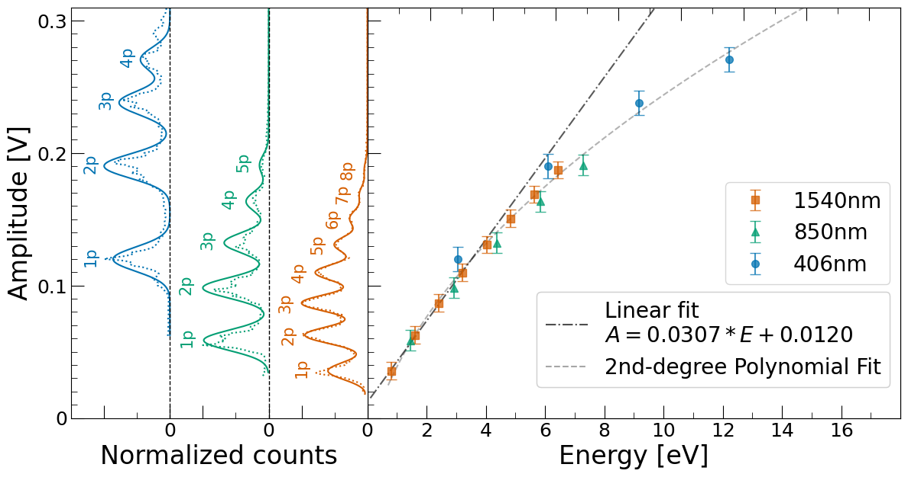
3 تصنيف الأحداث
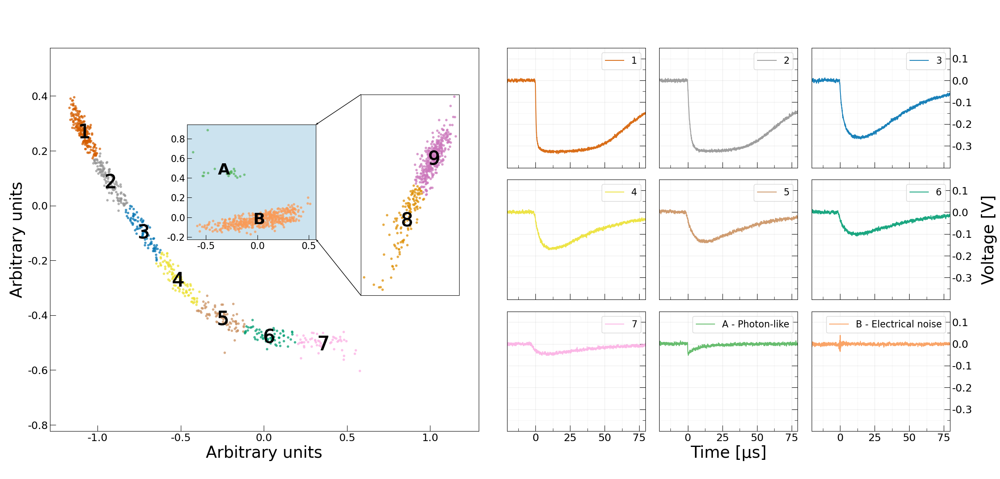
تسمى الإشارات التي يرصدها حساس TES من دون أي بصريات إدخال “عدّات مظلمة ذاتية للكاشف” في المرجع [Bienfang et al.(2023)Bienfang, Gerrits, Kuo, Migdall, Polyakov, and Slattery]. غير أننا في هذه الورقة نحذف الصفة “ذاتية”، لأننا حددنا مصادر خارجية تسهم في هذه العدّات بحيث لا تأتي كل العدّات المظلمة من داخل الحساس (أي إنها ليست ذاتية له). وتقع الإشارات المرصودة في ثلاث فئات متميزة: أحداث شبيهة بالفوتونات، وأحداث عالية الطاقة، وأحداث ضجيج كهربائي. ومع أن الأنواع الثلاثة من النبضات مميزة بصريا، فقد أتمتنا التصنيف باستخدام المسار الآتي المطور في python. بعد تطبيق مرشح Butterworth، نحسب مجموعة من المتغيرات لكل شكل موجي (مثل العرض الكامل عند نصف القيمة العظمى، والمطال الأعظمي، ومساحة النبضة، وغيرها). ونستخدم تحليل المكونات الرئيسية (PCA) لإيجاد التركيبين الخطيين للمتغيرات اللذين يعظمان تباين النقاط [Wold et al.(1987)Wold, Esbensen, and Geladi]. ثم يطبق تجميع k-المتوسطات على فضاء الطور ثنائي الأبعاد الناتج لتحديد عناقيد من الأحداث المتشابهة [Arthur and Vassilvitskii(2007)]. ولضمان دقة هذا الفرز الآلي، أجرينا مراجعة يدوية للعناقيد. وقد سهلت عملية المراجعة هذه واجهة مستخدم رسومية (GUI) تتيح اختيار مركز عنقود، ثم تعرض جميع الأشكال الموجية المرتبطة بذلك العنقود للتحقق السريع من التصنيف. وفي بعض الحالات، كما هو مبين في الشكل 2، كان من الضروري إعادة تطبيق خوارزمية التجميع على مجموعة جزئية من البيانات لفصل المجموعات الثلاث فصلا كاملا.
الأحداث الشبيهة بالفوتونات هي النقاط الخضراء في المجموعة A في الشكل 2، وقد حُصل عليها بإعادة تشغيل خوارزمية التصنيف على العنقودين 8 و9. وتتميز هذه الإشارات بزمن صعود حاد ≲1μs وتبدو مطابقة للإشارات التي نراها عندما نضيء حساس TES بضوء من ثنائي ليزري مخفف.
تتميز الإشارات في العناقيد 1–7 في الشكل 2 بزمني صعود واضمحلال طويلين، مما يشير إلى أن هذه الأحداث ناجمة عن ترسيبات طاقة كبيرة في ركيزة حساس TES، ويرجح أن تأتي من جسيمات ثانوية للأشعة الكونية أو من اضمحلالات مشعة طبيعية. لذلك نشير إليها باسم “أحداث عالية الطاقة.” ويتسق هذا التصنيف مع زمن الصعود الطويل المرصود، الذي يمكن نسبته إلى الانتشار البطيء للطاقة من الركيزة إلى حساس TES.
تظهر أحداث الضجيج الكهربائي (العنقود البرتقالي B في الشكل 2، الذي حُصل عليه بإعادة تحليل العنقودين 8 و9) قمما جهدية تتذبذب بين قيم موجبة وسالبة، وتتميز بمساحة نبضة قريبة من الصفر. ونعزو هذه الأحداث إلى تداخل كهرومغناطيسي مع جهاز القراءة. وحقيقة أنها تبقى قابلة للكشف حتى عندما يكون حساس TES في حالة فائقة التوصيل بالكامل، وهي حالة لا يكون فيها حساسا لترسيبات الطاقة، تشير إلى أن السبب ليس حساس TES.
4 التشغيلات التجريبية
الأحداث الشبيهة بالفوتونات هي الإشارة المتوقعة للهالوسكوبات العازلة التي تبحث عن الفوتونات المظلمة بوصفها مادة مظلمة. لذلك، من الضروري قياس معدل DCR الشبيه بالفوتونات في حساس TES عندما يعمل الحساس في الظلام، من دون وصلة بصرية إلى المحيط وفي غياب المصادر المشعة، لأن ذلك يشكل الخلفية التي يعمل الهالوسكوب العازل في مقابلها.
في بداية دراستنا، توقعنا رؤية معدل DCR شبيه بالفوتونات من رتبة 10−4 Hz، بما يتسق مع نتائج المرجع [Dreyling-Eschweiler et al.(2015)Dreyling-Eschweiler, Bastidon, Döbrich, Horns, Januschek, and Lindner]، وهي الدراسة السابقة الوحيدة ذات الطبيعة المماثلة. وكان هناك أيضا سؤال عما إذا كانت الأشعة الكونية أو الاضمحلالات المشعة الطبيعية، المتفاعلة مع حساس TES أو ركيزته، يمكن أن تفسر بعض هذه الأحداث الشبيهة بالفوتونات كما اقترح المؤلفون أنفسهم. ولاستكشاف هذه الإمكانية، وللحصول على فهم أعمق لطبيعة الأحداث العالية الطاقة، التي لم تدرس على نطاق واسع سابقا في حساسات TES البصرية، أجرينا أربعة اختبارات محددة موضحة أدناه. ومن المهم ملاحظة أن جميع التشغيلات التجريبية أجريت في غياب مصدر ضوئي ومن دون ليف بصري موصول بحساس TES، الذي كان محاطا بالكامل بصندوق نحاسي مقترن حراريا بمرحلة 30 mK (انظر الشكل 3). وعلى الرغم من وجود ثلاثة ألياف في المبرّد لإتاحة إجراءات المعايرة الأولية، فقد ثبتت نهاياتها على الجانب الخارجي لمرحلة 3 K داخل ADR.
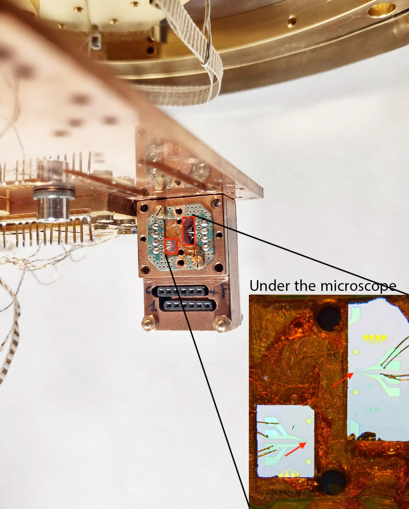
كان التشغيل الأول اختبار خلفية (التشغيل 1) بهدف قياس معدل DCR الشبيه بالفوتونات. وبالإضافة إلى ذلك، قسنا في التشغيل نفسه معدل DCR العالي الطاقة، الذي افترضنا أنه ناجم عن الأشعة الكونية أو الاضمحلالات المشعة الطبيعية المتفاعلة مع ركيزة حساس TES.
في التشغيلين 2 و3، استخدمنا مصدرين مشعين، 232Th و22Na، على التوالي. وُضعت هذه المصادر ملاصقة لخارج ADR ومحاذاة عموديا مع ركيزة حساس TES، التي كانت مركبة عموديا داخل ADR (انظر الشكل 3). كان هدف هذه الاختبارات فحص استجابة حساس TES لأحداث غاما باستخدام مصادر مشعة. وتوقعنا أن تؤدي أشعة غاما البيئية إلى استجابة مماثلة في الحساس. في التشغيل 2، استخدم مصدر 232Th بنشاط مقاس يقارب 10kBq. أما في التشغيل 3، فاستخدمنا مصدر 22Na، وكان نشاطه نحو 32kBq. يتميز طيف انبعاث 22Na بقمتين كهروضوئيتين بارزتين. ومن اللافت أن إحدى هاتين القمتين تقابل الانبعاث المتزامن لفوتونين بطاقة 511 keV في اتجاهين متعاكسين، وهي ظاهرة تحدث بسبب إفناء الإلكترون-البوزيترون عقب اضمحلال β+. وقد حُصر هذا المصدر بين ADR وومياض بلاستيكي موصول بأنبوب مضاعف ضوئي (PMT)، نسميه “سابر.” أتاح هذا الإعداد قياس المصادفات الثنائية لأشعة غاما المتعاكسة الاتجاه، ملتقطا هذه الوقائع بكل من سابر وحساس TES.
أما الاختبار الرابع (التشغيل 4)، فبغرض البرهنة على أن الأشعة الكونية يمكنها أيضا إحداث أحداث عالية الطاقة في حساس TES، نفذنا نظام مصادفة للأشعة الكونية، بوضع ثلاثة كواشف سابر، جنبا إلى جنب، مباشرة تحت ADR (انظر الشكل 4). وكان التقداح المتزامن لحساس TES وجميع كواشف سابر يشير إلى زخّة أشعة كونية أو حدث حزمة ميونات. وشغّلت كواشف سابر الثلاثة عند الكسب نفسه ضمن لايقين قدره 10%. وضُبطت العتبة عند 120mV على الثلاثة جميعا، وهو ما يقابل 250keV (لمزيد من التفاصيل حول معايرة كواشف سابر، انظر الملحق F).
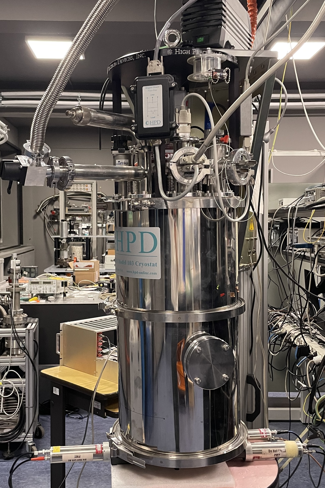
أجري اكتساب البيانات بنمطين: في التشغيل 4A، الذي استمر نحو 19 ساعة، ضُبط راسم الذبذبات على التقداح عند إشارة AND لكواشف سابر الثلاثة، مع تسجيل إشارة TES في الوقت نفسه. وضبطت المصادفة في التشغيل 4A باستخدام وظيفة التقداح الذكي في راسم الذبذبات، بحيث تتطلب تجاوز الإشارة للعتبة في جميع قنوات سابر عبر نافذة 10μs كاملة. وفي التشغيل 4B، الممتد نحو 14 ساعة، ضُبط التقداح على حساس TES للإشارات الأكبر من 0.8eV، مع تسجيل مخارج كواشف سابر الثلاثة كلها. وقد أعطى التشغيل 4A نسبة المصادفات الرباعية (الأحداث المسجلة في كل من TES وكواشف سابر الثلاثة) إلى المصادفات الثلاثية (الأحداث التي كشفتها كواشف سابر فقط)، بينما أتاح التشغيل 4B تقدير نسبة المصادفات الرباعية إلى العدد الكلي للأحداث العالية الطاقة التي كشفها حساس TES.
5 محاكاة GEANT4
تشير الحسابات الأولية إلى أن تآثرات الأشعة الكونية المباشرة مع حساس TES وحده لا يمكن أن تفسر العدد المرصود من الأحداث العالية الطاقة. ولتقدير أقصى مساهمة مباشرة ممكنة للأشعة الكونية، نظرنا في سيناريو يكون فيه حساس TES موجها أفقيا، بحيث تعظم مساحة تعرضه. عند مستوى سطح البحر، يبلغ متوسط تدفق الميونات نحو 120m−2s−1 (انظر، على سبيل المثال، [Arneodo et al.(2019)Arneodo, Benabderrahmane, Bruno, Di Giovanni, Fawwaz, Messina, and Mussolini]). وحتى عند مضاعفة هذه القيمة بصورة محافظة لاحتساب جسيمات الأشعة الكونية غير الميونات، فإن حساس TES بمساحة 20×20μm2 لن يتلقى إلا نحو 10−2 إصابات مباشرة في اليوم. وفي المقابل، ستتعرض ركيزتنا الأكبر ذات المساحة 6.7×2.7mm2 والسماكة 500 µm لنحو 400 جسيم أشعة كونية يوميا. وبما أننا نرصد نحو ألف حدث عالي الطاقة يوميا في قياساتنا، وهو عدد يتجاوز بكثير الإصابات المباشرة المقدرة في حساس TES، فإننا نستنتج أن هذه الأحداث لا بد أن تنشأ أساسا من ترسيبات طاقة داخل الركيزة، وليس من تآثرات مباشرة مع المساحة الفعالة لحساس TES. وفي الواقع، كما سنرى لاحقا، تنشأ هذه الأحداث العالية الطاقة من تآثر الأشعة الكونية وأشعة غاما البيئية مع الركيزة.
طورنا محاكاة مبنية على geant4 للتحقق من فهمنا للأحداث العالية الطاقة التي يراها الحساس. شغّلنا المحاكاة في ثلاث تهيئات تسمى المحاكاة 2، و3، و4، وهي تحاكي الإعدادات التجريبية للتشغيلات 2، و3، و4، على التوالي. وقد استخدمت جميع المحاكاة الركيزة ككاشف حساس بدلا من حساس TES نفسه.
في المحاكاة 2، نمذجنا مصدر 232Th كما في التشغيل 2، وحاكينا مليار حدث اضمحلال. وافترضت المحاكاة أن المصدر في توازن علماني. ويدعم هذا النهج بيانات تجريبية حُصل عليها من تحليل مصدر الثوريوم بكاشف جرمانيوم عالي النقاوة (HPGe) في NYUAD، وقدمت معلومات عن مستوى النشاط والطيف متسقة مع هذا الافتراض. واستخدم النشاط المستخلص من هذه القياسات، وهو نحو 10kBq، أيضا لتحويل عدد الاضمحلالات المحاكى إلى زمن (أي نحو 100000s لكل 1billion اضمحلال).
في المحاكاة 3، وُضع مصدر 22Na وكاشف سابر كما في التشغيل 3، وحوكي مليار اضمحلال. وبالطريقة نفسها المتبعة مع الثوريوم، استخدمنا النشاط المعروف البالغ 32kBq لتحويل العدد المحاكى من الاضمحلالات إلى زمن.
في المحاكاة 4، نمذجنا كواشف سابر الثلاثة جنبا إلى جنب، تحت ADR، وولدنا عشرة مليارات جسيم ثانوي من الأشعة الكونية باستخدام Cosmic-ray Shower Library (حزمة CRY [Hagmann et al.(2007)Hagmann, Lange, and Wright]). وقد اصطدمت هذه الجسيمات الكونية، وكذلك الجسيمات التي تنتجها تآثراتها مع الإعداد، بالركيزة وبكواشف سابر. وأُهملت إصابات كواشف سابر إذا كان ترسيب الطاقة فيها أقل من 250keV، وهو ما يقابل عتبة التقداح المستخدمة في التشغيل 4A.
إضافة إلى الأشعة الكونية، حاكينا أيضا أشعة غاما البيئية الناشئة من النشاط الإشعاعي لمواد البناء ومصادر الإشعاع الطبيعي الأخرى. وولدت أشعة غاما هذه وفقا لطيف أشعة غاما الفعلي المقاس في المختبر، باستخدام بلورة NaI موصولة بأنبوب مضاعف ضوئي. وأشارت قياساتنا إلى متوسط تدفق غاما مقداره 1–2 gamma cm−2 s−1.
من المحاكاة 4، حصلنا على معدل DCR عال الطاقة محاكى، ثم قورن بمعدل DCR العالي الطاقة المرصود في التشغيل 1 (انظر النقطتين العلويتين الخضراء والبرتقالية في الشكل 6). ولتحقيق ذلك، جمعنا معدل الأحداث المكتشفة في ركيزة TES أثناء محاكاة أشعة غاما البيئية والمعدل المحصل عليه أثناء محاكاة الأشعة الكونية. ولتحويل العدّات المحاكاة (خرج المحاكاة) إلى معدل محاكى، استخدمنا معدل المصادفات الثلاثية من التشغيل 4A ومعدل غاما البيئي من كاشف NaI كعوامل تحويل زمنية. وبالإضافة إلى ذلك، مكنتنا المحاكاة 4 من حساب نسب المصادفات الثلاثية إلى الرباعية، وإصابات TES العالية الطاقة إلى المصادفات الرباعية. وتقابل هذه النسب تلك المقاسة في التشغيلين 4A و4B، على التوالي.
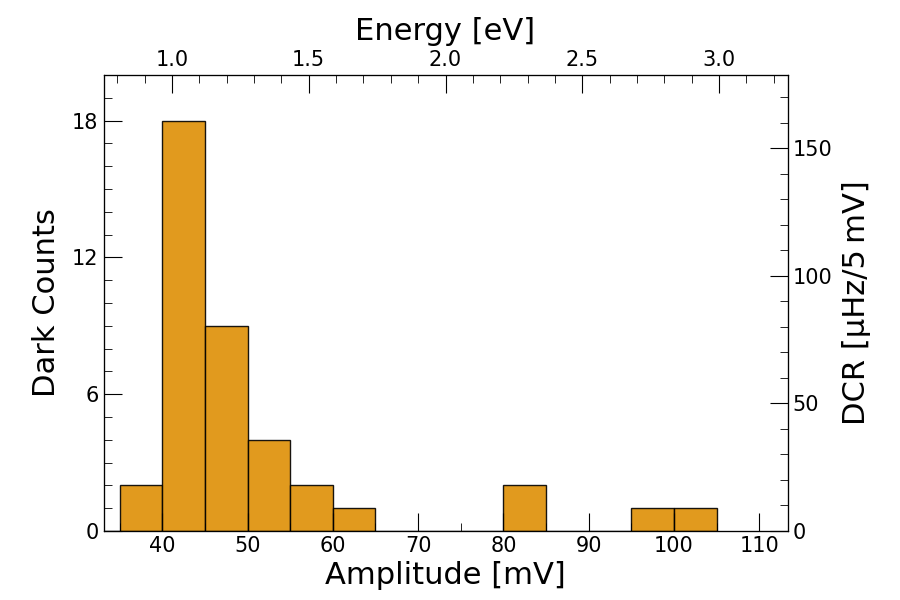
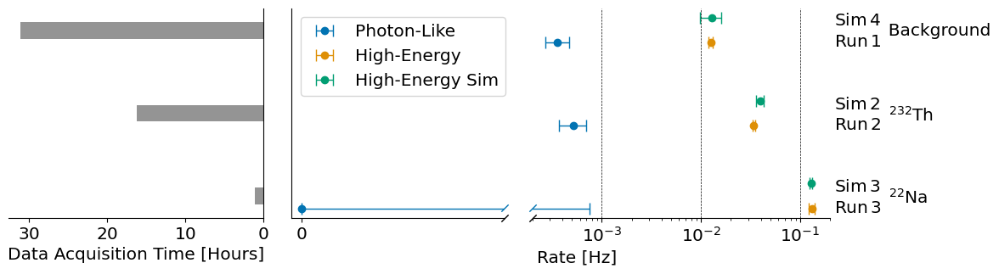
لدراسة مساهمة الاضمحلالات المشعة في عدد الأحداث العالية الطاقة التي يراها حساس TES، أجرينا تحليلا بمطيافية الكتلة بالبلازما المقترنة حثيا (ICP-MS) في Laboratori Nazionali del Gran Sasso (LNGS، L’Aquila، إيطاليا). واستخدم ذلك لتقييم النشاط الإشعاعي الذاتي للمواد المحيطة بحساس TES، وتحديدا الركيزة والصندوق النحاسي الحاوي لحساس TES. وركز التحليل على اليورانيوم والثوريوم، اللذين اشتبهنا في أنهما المساهمان الرئيسيان في الاضمحلالات المشعة. في الركيزة، وُجد أن تركيزي اليورانيوم والثوريوم أقل من 3ppb (أجزاء في المليار) و7ppb، على التوالي. وبالنسبة إلى الصندوق النحاسي، كانت تراكيز كلا النظيرين دون 1ppb. وبعد إدراج النشاط الإشعاعي المقاس للصندوق النحاسي والركيزة في محاكاتنا geant4، تبين أن حساس TES سيسجل نحو إصابة واحدة كل 500 يوم (21nHz). وتشير هذه النتيجة إلى أن النشاط الإشعاعي الذاتي للمواد القريبة جدا من حساس TES يسهم إسهاما مهملا في معدل العدّ المظلم العالي الطاقة له.
6 النتائج والمناقشة
النتيجة الأساسية من التشغيل 1 هي أن معدل DCR الشبيه بالفوتونات يبلغ 3.6d − 4 Hz ضمن مجال الطاقة 0.8–3.2 eV. ومن اللافت أنه عند 1.5 ± 0.2 eV، وهو مجال الطاقة الذي يستهدفه كاشف هالوسكوب MuDHI للفوتونات المظلمة بوصفها مادة مظلمة [Manenti et al.(2022)Manenti, Mishra, Bruno, Roberts, Oikonomou, Pasricha, Sarnoff, Weston, Arneodo, Di Giovanni et al.]، يكون معدل DCR الشبيه بالفوتونات 6d− 5 Hz. في الشكل 5، نعرض معدل DCR الشبيه بالفوتونات لحساس TES بدلالة طاقة الفوتون ومطال الإشارة.
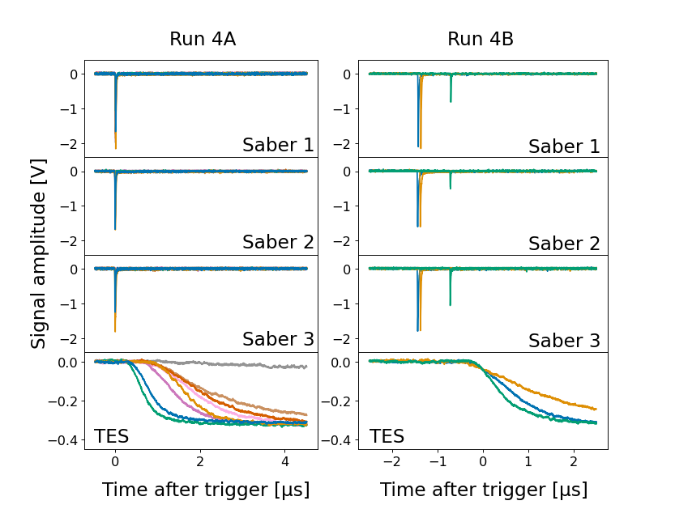
على خلاف التوقعات الأولية، ظل معدل DCR الشبيه بالفوتونات في مجال الطاقة 0.8–3.2 eV ثابتا (ضمن اللايقينات) عبر جميع التشغيلات (انظر النقاط الزرقاء في الشكل 6)، رغم إدخال مصادر مشعة في التشغيلين 2 و3. ويشير هذا الاتساق في معدل DCR الشبيه بالفوتونات، بصرف النظر عن وجود مصادر مشعة، إلى أن أشعة غاما لا تسهم في معدل الأحداث الشبيهة بالفوتونات المرصود. ورغم تضمين حزمة الفيزياء البصرية في محاكاتنا geant4، لم تسجل أي فوتونات بصرية تدل على عمليات التلألؤ حول حساسات TES.
أحد التفسيرات المحتملة لمعدل DCR الشبيه بالفوتونات المرصود هو وجود فوتونات بصرية شاردة داخل المبرّد، ربما من الضوء المحيط الخارجي. غير أن احتمال دخول هذه الفوتونات عبر الليف البصري يبدو ضئيلا، لأن أي ضوء محيط يدخل الليف سيمتص عند مرحلة 3 K المثبت بها. ويدعم ذلك بحث سابق يبين أن وجود أو غياب ليف داخل المبرّد، من دون أن يكون مقترنا مباشرة بحساس TES، لا يؤثر تأثيرا معنويا في معدل DCR الشبيه بالفوتونات (انظر الشكل 4.13 في المرجع [Dreyling-Eschweiler(2014)]). ويدل ذلك على أن مصدر هذه الإشارات الشبيهة بالفوتونات لا يزال مجهولا، ومن ثم غياب نقاط المحاكاة في الشكل 6 لمعدل DCR الشبيه بالفوتونات، ويستلزم مزيدا من البحث.
في التشغيل 1، اخترنا الإشارات العالية الطاقة لحساب معدل العدّ المظلم العالي الطاقة. وينتج هذا المعدل من تآثرات الأشعة الكونية وأشعة غاما البيئية مع ركيزة حساس TES، كما تؤكد محاكياتنا. ومن اللافت أنه بالنسبة إلى TES B، التي تبلغ مساحة ركيزتها نصف مساحة ركيزة TES E، لاحظنا أن معدل DCR العالي الطاقة كان نصف معدل TES E، مما يدعم العلاقة بين حجم الركيزة ومعدل DCR العالي الطاقة (لمزيد من التفاصيل، انظر الملحق E).
عند إدخال المصادر المشعة، لوحظت زيادة واضحة في معدل الإشارات العالية الطاقة في حساس TES على راسم الذبذبات. وكان ذلك مرئيا بصورة خاصة مع مصدر 22Na. وتبين محاكاتنا أننا نستطيع نمذجة الأحداث العالية الطاقة بدقة في وجود مصدر مشع، مع نتائج متوافقة لتشغيلي 232Th و22Na كليهما. وتشير المحاكاة إلى أن الركيزة تمتص الطاقة ثم تنقلها إلى حساس TES، حيث تكشف. ومن اللافت أن تغيير مساحة الركيزة يغير معدل DCR خطيا، مما يؤكد آلية التآثر هذه أكثر.
قدم التشغيل 4 تأكيدا على أن زخات الأشعة الكونية قادرة على إنتاج أحداث عالية الطاقة في حساس TES، كما يتضح من المصادفات الرباعية المرصودة بين الحساس وكواشف سابر الثلاثة أسفل ADR (انظر الشكل 7). وتبالغ النسبة المحاكاة للمصادفات الثلاثية إلى المصادفات الرباعية، التي تمثل كسر أحداث الأشعة الكونية التي كشفها نظام سابر والتي أودعت أيضا طاقة في حساس TES، في تقدير النسبة المرصودة في التشغيل 4A بمعامل 5. وبالمثل، تبالغ النسبة المحاكاة لإصابات TES العالية الطاقة إلى المصادفات الرباعية في تقدير التشغيل 4B بمعامل 1.7. ويرجح أن ترجع هذه الفروق إلى نظاميات في محاكاة الأشعة الكونية. يبين الجدول 1 العدّات الخام للمصادفات الثلاثية والرباعية في المحاكاة والواقع.
| Sim | Exp | Ratio Sim/Exp | |
| Run 4A t/q | 107524/46 | 3818/8 | 5 |
| Run 4B h/q | 24906/46 | 963/3 | 1.7 |
7 الاستنتاجات
لقد وصفنا معدل العدّ المظلم لحساس حافة انتقال فائق التوصيل من Ti/Au. ومن خلال استخدام تفكيك القيم المفردة، وتحليل المكونات الرئيسية، وتجميع k-المتوسطات، رشحنا الضجيج والأحداث العالية الطاقة بفعالية لعزل الإشارات الشبيهة بالفوتونات. وتحظى هذه الإشارات الشبيهة بالفوتونات باهتمام خاص لأنها تشبه إشارة الفوتون المظلم المتوقعة في هالوسكوب عازل. وقد حققنا معدل DCR شبيها بالفوتونات مقداره 3.6d− 4 Hz في مجال 0.8–3.2 eV. إن إزالة الوصلات البصرية بين حساس TES والمحيط ضرورية لتحقيق معدلات DCR منخفضة جدا. وما يزال مصدر الأحداث الشبيهة بالفوتونات المتبقية المرصودة غير مفسر، مما يستلزم مزيدا من البحث.
وفيما يخص الأحداث العالية الطاقة، فإن تشغيلاتنا باستخدام مصدري 232Th و22Na، مع قياسات المصادفة بين حساس TES وكاشف خارجي للأشعة الكونية، مقترنة بمحاكاة geant4 مفصلة، أتاحت لنا إسناد هذه الأحداث إلى اصطدامات جسيمات عالية الطاقة في ركيزة حساس TES. وقد افترضت دراسات سابقة أن هذه الأحداث العالية الطاقة ناتجة من تآثر الإشعاع والأشعة الكونية مع الركيزة، لكنها افتقرت إلى تحقق تجريبي ومحاكاة. وإضافة إلى ذلك، يبدو أن الإشعاع الطبيعي من المواد القريبة جدا من حساس TES له أثر مهمل في معدل DCR العالي الطاقة لحساس TES. وبدلا من ذلك، فإن المساهمين الرئيسيين في هذا المعدل هما جسيمات الأشعة الكونية وأشعة غاما البيئية التي تصطدم بالركيزة. وجميع الشيفرات المستخدمة في المحاكاة متاحة في مستودعنا على GitHub [git(2024a)].
شكر وتقدير
أُنجز جزء من هذا العمل في QR Lab-Micro&Nanolaboratories، Istituto Nazionale di Ricerca Metrologica (INRiM). نشكر Stefano Nisi وFrancesco Ferella في Laboratori Nazionali del Gran Sasso (LNGS) على قياسات ICP-MS. أُجري هذا البحث على موارد الحوسبة عالية الأداء في New York University Abu Dhabi. ونحن ممتنون لبرنامج NYUAD Kawader Research Assistantship Program. وقد أصبح هذا العمل ممكنا أيضا بمساهمة منحة (62313) من John Templeton Foundation. وتُشغّل Fermilab بواسطة Fermi Research Alliance, LLC بموجب العقد رقم DE-AC02-07CH11359 مع وزارة الطاقة الأمريكية.
الملحق
A تصنيع TES
صُنّع كل من TES B وTES E في INRiM. ويتكونان من غشاء Ti بسماكة 15 nm تحت غشاء Au بسماكة 30 nm مرسبين على ركيزة [Monticone et al.(2021)Monticone, Castellino, Rocci, and Rajteri]. صُنعت الركيزة بترسيب كيميائي بخاري منخفض الضغط (LPCVC)، وتتكون من ركيزة Si (بسماكة 525±25μm)، محصورة بين طبقتين ثنائيتين تتكونان من نيتريد السيليكون SiNx (بسماكة 500nm) والأكسيد الحراري SiO2 (بسماكة 150nm)، مع نيتريد السيليكون بوصفه الطبقة الخارجية.
أجريت الترسيبات في حجرة ترسيب مخصصة ذات فراغ فائق (UHV) عند ضغط أقل من 5d − 6 Pa، وهو أمر أساسي لمنع أكسدة Ti وتحقيق سطح بيني أملس بين التيتانيوم والذهب. وقد حُددت حدود حساسات TES بتقنية الرفع باستخدام كاتب ليزري Heidelberg µPG101.
قبل الترسيب، خضعت الركيزة لحفر بالرش لمدة 15 s عند 400V. ثم نُقلت العينة إلى حجرة UHV لترسيب Ti وAu. واشتمل ذلك على ترسيب Ti بواسطة حزمة e بمعدل 0.25nm∕s، ثم، بعد نحو 30s، ترسيب Au بواسطة خلية إفاضة بمعدل 0.07nm∕s. ورُوقبت السماكات المترسبة باستمرار بواسطة حساس بلورة كوارتز.
صُنعت التوصيلات بعملية رفع لـ 50nm من Nb مرشوش. واستُخدم الحفر بالرش قبل عملية التوصيل لتقليل مقاومة التلامس بين Nb وحساسات TES.
B خوارزمية التصنيف
لتصنيف نوع الحدث لكل شكل موجي، نطبق أولا مرشح SciPy Butterworth بنمط تمرير منخفض، من الرتبة 2، وبتردد 1/30، وهو، عند تطبيقه على بيانات TES المولدة بالتقداح والمأخوذة عيناتها عند 25MHz، يقابل 417kHz. ثم نحسب مجموعة من المتغيرات تشمل المطال الأعظمي، والمساحة، والعرض الكامل عند نصف القيمة العظمى، والانحراف المعياري، ومتوسط التدرج الموجب والسالب، والترابط المتصالب مع حدث شبيه بالفوتونات مرجعي. وهذا يعطينا نقطة في فضاء ذي n أبعاد لكل نبضة TES سجلها راسم الذبذبات.
ثم نجري PCA على المصفوفة التي تحتوي النقاط ذات الأبعاد n المذكورة أعلاه [Wold et al.(1987)Wold, Esbensen, and Geladi]. وباستخدام هذه التقنية، يمكننا تحديد المحورين في هذا الفضاء ذي الأبعاد n اللذين يعظمان التباين بين هذه النقاط. وعادة ما يؤدي رسم النبضات على هذين المحورين إلى عناقيد متميزة. وتمكن هذه التمثيلة من التمييز البصري بين الأحداث الشبيهة بالفوتونات، والعالية الطاقة، وأحداث الضجيج الكهربائي.
وعلاوة على ذلك، يتيح تطبيق تجميع k-المتوسطات جمع النبضات التي تقع متقاربة في الفضاء ذي الأبعاد n بسهولة [Arthur and Vassilvitskii(2007)]. إن الاستخدام المشترك لهذه الأدوات، ومعه، عند الضرورة، إعادة تحليل مجموعات جزئية مختارة من النبضات، يتيح تمييزا فعالا لأشكال النبضات في مجموعات بيانات تتكون من آلاف إلى عشرات الآلاف من النبضات في نحو 10 min.
طُور البرنامج بلغة Python باستخدام وحدة SciPy [Virtanen et al.(2020)Virtanen, Gommers, Oliphant, Haberland, Reddy, Cournapeau, Burovski, Peterson, Weckesser, Bright, van der Walt, Brett, Wilson, Millman, Mayorov, Nelson, Jones, Kern, Larson, Carey, Polat, Feng, Moore, VanderPlas, Laxalde, Perktold, Cimrman, Henriksen, Quintero, Harris, Archibald, Ribeiro, Pedregosa, van Mulbregt, and SciPy 1.0 Contributors]، وهو متاح في المرجع [git(2024b)].
C GEANT4
استخدمنا برنامج geant4 v.11.1.2، وهو إطار كائني التوجه مكتوب بلغة C++ ويستخدم طرائق مونت كارلو [Agostinelli et al.(2003)Agostinelli, Allison, Amako, Apostolakis, Araujo, Arce, Asai, Axen, Banerjee, Barrand et al.]. في محاكياتنا، فعّلنا وحدة فيزياء الطاقة المنخفضة EmLiverMore، مع تمكين معامل الانبعاث السيني المستحث بالجسيمات (PIXE).
خلال كل حدث محاكاة، جُمعت بيانات عن خصائص الجسيم، بما فيها الموضع، والطاقة الابتدائية، والرأس الأولي، والحجم أو الأحجام الحساسة التي يصيبها، والطاقة المترسبة. ولمحاكاة جسيمات الأشعة الكونية، التي تشمل النيوترونات، والبروتونات، وأشعة غاما، والإلكترونات، والبيونات، والميونات، استخدمنا Cosmic Ray Shower Library (CRY) [Hagmann et al.(2007)Hagmann, Lange, and Wright]. ولمحاكاة النشاط الإشعاعي البيئي استخدمنا طيف غاما المقاس في المختبر بواسطة كاشف NaI. وولدت أشعة غاما نظيريا على سطح أسطواني يحيط بـ ADR.
في المحاكيات التي تتضمن الثوريوم والصوديوم، استخدمنا وحدة Radioactive Decay مع General Particle Source. ولتحسين زمن الحوسبة، قصرنا تحليلنا على النواتج الثانوية ذات Track ID يساوي 50 أو أقل. وتحققنا من صحة هذا النهج بمقارنة طيف 232Th من محاكاتنا مع قياسات كاشف الجرمانيوم عالي النقاوة في NYUAD (الشكل 8).
عُرّفت هندسة الكاشف باستخدام ملفات Geometry Description Markup Language (GDML)، والتي، عند دمجها مع ملفات ماكرو، أتاحت الضبط الديناميكي لمعاملات محاكاة مختلفة. وبالنسبة إلى المحاكيات المكثفة حسابيا، استخدمنا واجهة تمرير الرسائل (MPI) على حاسوب عالي الأداء، مما أتاح لنا استخدام نحو 8000 ساعة CPU لكل محاكاة.
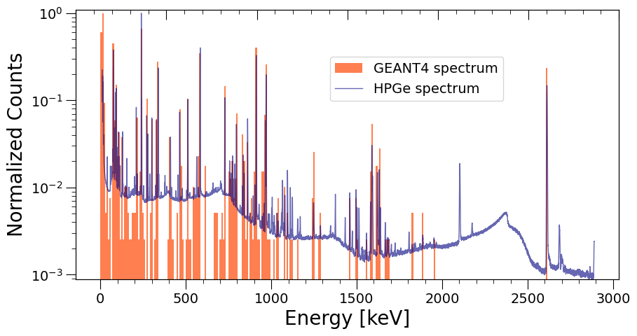
D TES B
في الشكل 9، نعرض منحنى معايرة الطاقة لـ TES B.
أسفر تشغيل خلفية مدته 14 ساعة و45 دقيقة عن سبع عدّات شبيهة بالفوتونات و370 عدّة عالية الطاقة. ومعدل العدّ المظلم العالي الطاقة يساوي نصف معدل TES E، الذي تبلغ ركيزته ضعف حجم ركيزة TES B. ويتسق ذلك مع الفرضية القائلة إن الأحداث العالية الطاقة ناجمة عن تآثرات جسيمات الأشعة الكونية داخل الركيزة. غير أن معدل DCR الشبيه بالفوتونات هو فعليا نفسه كما في TES E، مما يعني أن الأحداث الشبيهة بالفوتونات لا تنشأ في الركيزة، ومن ثم لا تتأثر بالاختلاف في حجم الركيزة.
إن اتساق النتائج من كلا الحساسين TES يشير إلى أن تقنيات التصنيع التي نستخدمها موثوقة وتؤدي إلى حساسات قابلة للاستنساخ.
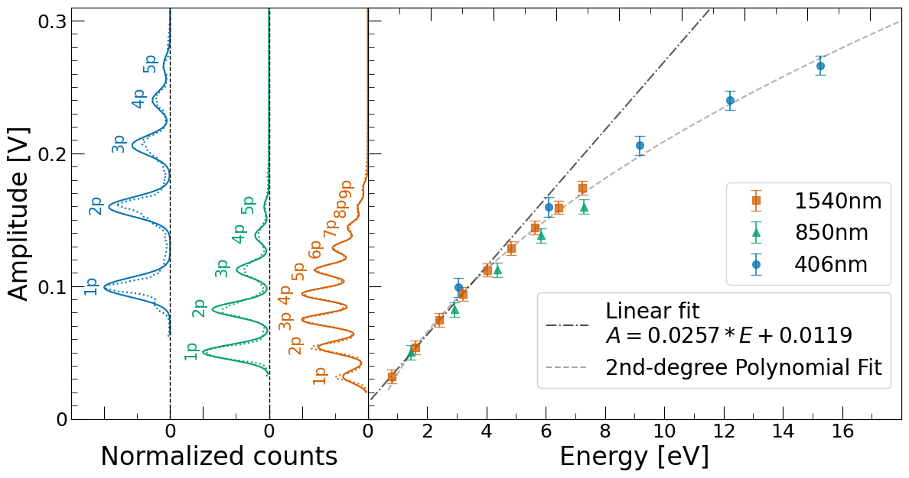
E الحجم الحساس
لتقييم ما إذا كانت حساسات TES حساسة فقط لترسيبات الطاقة في الركيزة أم أيضا لترسيبات الطاقة في قاعدة الصندوق النحاسي الذي يستضيفها، أجريت تجربة مصدر ثوريوم تشمل كلا الحساسين TES. كما أجريت محاكاة geant4 (انظر الشكل 10).
| TES E | TES B | Both | |||
| Experiment | 687 | 464 | 7 | ||
| Simulation | 563 | 472 | 5 |
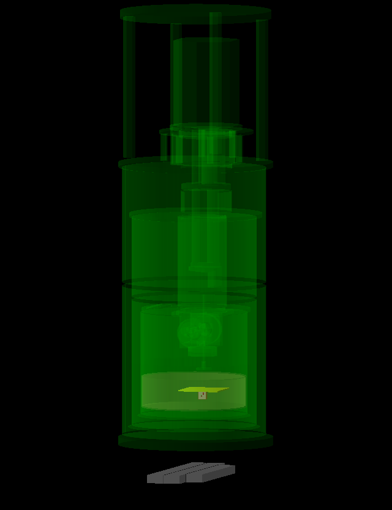
تلخص نتائجنا في الجدول 2. وتظهر كل من البيانات التجريبية والمحاكاة نسبا متقاربة بين عدّات TES E وTES B، وكذلك أعدادا مماثلة من المصادفات الثنائية. وتعزز هذه النتائج اعتقادنا بأن الركيزة، وهي الحجم الحساس في المحاكاة، هي الحجم الوحيد الذي تؤدي فيه ترسيبات الطاقة إلى كشوف في حساسات TES.
وبما أن قاعدة الصندوق النحاسي ليست حجما حساسا في المحاكاة، فإذا كانت الطاقة المترسبة في النحاس قابلة للكشف بواسطة حساسات TES في الواقع، لتوقعنا أن تقلل المحاكاة تقدير إصابات TES. وعلاوة على ذلك، بما أن قاعدة الصندوق النحاسي تصل بين حساسي TES، فإذا كان النحاس قادرا على نشر الحرارة إلى الحساسين، لرأينا مصادفات ثنائية أكثر بكثير في الواقع مما في المحاكاة. وبما أننا لم نرصد أيا من الأمرين، نستنتج أن الطاقة المترسبة في النحاس لا تسهم في إصابات TES.
ولدراسة طبيعة المصادفات الثنائية بمزيد من التفصيل، حسبنا معدل المصادفات العشوائية باستخدام الصيغة NEB = 2NENB ⋅
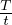
، حيث NEB هو عدد المصادفات الثنائية، وNE وNB هما عدد الإصابات في TES E وTES B، على التوالي، وT زمن البوابة، وt زمن القياس الكلي. وبالنسبة إلى إعدادنا المحدد، الذي تضمن زمن بوابة قدره 100μs وزمنا كليا قدره 17.5 ساعة، فإن العدد المتوقع للمصادفات الثنائية العشوائية هو 0.001. وهذا العدد أقل بوضوح من الوقائع السبع التي رصدناها على مدى 17.5 ساعة. ويؤكد ذلك أن المصادفات الثنائية مترابطة ويرجح أن تكون ناجمة عن اضمحلال 232Th الأولي نفسه. ومن خلال المحاكاة، تبين أن المصدر الرئيسي لمثل هذه المصادفات هو الإلكترونات الثانوية، الناشئة في الصندوق النحاسي من أحداث اضمحلال 232Th، التي تصطدم بالركائز في الوقت نفسه.وللتحقق أكثر من أن ترسيبات الطاقة المسببة للأحداث العالية الطاقة تحدث فقط داخل الركيزة، أجرينا سلسلة من المحاكيات نغير فيها كلا من حجم الركيزة وبعدها عن المصدر المشع. وتتفق هذه المحاكيات مع الواقع أفضل ما يكون عندما يطابق الحجم الحساس حجم الركيزة الحقيقي وموضعها، وتكشف عن علاقة قانون تربيعي بين معدل العدّ والمسافة من المصدر المشع.
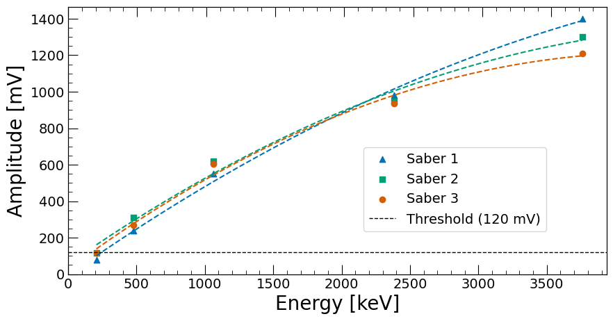
F معايرة كواشف سابر
أجريت معايرة كواشف سابر في NYUAD باستخدام مصادر مشعة مختلفة. ولكل مصدر، حددنا حافة كومبتون المميزة وقسنا ارتفاع القمة المقابل في طيف المطال المكتشف (بالملي فولت). في الشكل 11، نعرض منحنى المعايرة لكواشف سابر الثلاثة كلها مع تشغيل PMTs عند مكاسب متشابهة، بينما ندرج في الجدول 3 البيانات الخام.
| Saber 1 [mV] | Saber 2 [mV] | Saber 3 [mV] | Compton edge [keV] | |
| 133Ba | 78 | 115 | 116 | 207 |
| 137Cs | 240 | 310 | 270 | 478 |
| 22Na | 550 | 620 | 604 | 1062 |
| 232Th | 980 | 945 | 935 | 2381 |
| Muons | 1400 | 1300 | 1210 | 3760 |
G بيانات المحاكاة والتجربة
في الجدول 4، نورد القيم المحصلة في المحاكاة وفي الواقع لمعدل DCR الشبيه بالفوتونات والعالي الطاقة أثناء تشغيلات الخلفية والثوريوم والصوديوم.
| Photonlike [mHz] | High-energy [mHz] | High-energy Sim [mHz] | |
| Background | 0.36 −0.09+0.11 | 12.10 −0.54+0.56 | 12.83 −0.33+0.39 |
| 232Th | 0.52 −0.14+0.18 | 34.00 −1.25+1.28 | 39.20 −3.44+3.44 |
| 22Na | 0.00 −0.00+0.75 | 131.00 −9.25+9.79 | 129.00 −4.02+4.02 |
References
[Irwin(1995)] K. Irwin, Applied Physics Letters 66, 1998 (1995).
[Cocco et al.(2007)Cocco, Mangano, and Messina] A. G. Cocco, G. Mangano, and M. Messina, Journal of Cosmology and Astroparticle Physics 2007 (06), 015.
[PTOLEMY Collaboration et al.(2022)PTOLEMY Collaboration, Apponi, Betti, Borghesi, Boyarsky, Canci, Cavoto, Chang, Cheianov, Cheipesh, Chung, Cocco, Colijn, D’Ambrosio, de Groot, Esposito, Faverzani, Ferella, Ferri, Ficcadenti, Frederico, Gariazzo, Gatti, Gentile, Giachero, Hochberg, Kahn, Lisanti, Mangano, Marcucci, Mariani, Marques, Menichetti, Messina, Mikulenko, Monticone, Nucciotti, Orlandi, Pandolfi, Parlati, Pepe, Pérez de los Heros, Pisanti, Polini, Polosa, Puiu, Rago, Raitses, Rajteri, Rossi, Rozwadowska, Rucandio, Ruocco, Strid, Tan, Teles, Tozzini, Tully, Viviani, Zeitler, and Zhao] PTOLEMY Collaboration, A. Apponi, M. G. Betti, M. Borghesi, A. Boyarsky, N. Canci, G. Cavoto, C. Chang, V. Cheianov, Y. Cheipesh, W. Chung, A. G. Cocco, A. P. Colijn, N. D’Ambrosio, N. de Groot, A. Esposito, M. Faverzani, A. Ferella, E. Ferri, L. Ficcadenti, T. Frederico, S. Gariazzo, F. Gatti, C. Gentile, A. Giachero, Y. Hochberg, Y. Kahn, M. Lisanti, G. Mangano, L. E. Marcucci, C. Mariani, M. Marques, G. Menichetti, M. Messina, O. Mikulenko, E. Monticone, A. Nucciotti, D. Orlandi, F. Pandolfi, S. Parlati, C. Pepe, C. Pérez de los Heros, O. Pisanti, M. Polini, A. D. Polosa, A. Puiu, I. Rago, Y. Raitses, M. Rajteri, N. Rossi, K. Rozwadowska, I. Rucandio, A. Ruocco, C. F. Strid, A. Tan, L. K. Teles, V. Tozzini, C. G. Tully, M. Viviani, U. Zeitler, and F. Zhao, Physical Review D 106, 053002 (2022).
[Gimeno et al.(2023)Gimeno, Isleif, Januschek, Lindner, Meyer, Othman, Schott, Shah, and Sohl] J. A. R. Gimeno, K.-S. Isleif, F. Januschek, A. Lindner, M. Meyer, G. Othman, M. Schott, R. Shah, and L. Sohl, Nuclear Instruments and Methods in Physics Research Section A: Accelerators, Spectrometers, Detectors and Associated Equipment 1046, 167588 (2023).
[Dreyling-Eschweiler et al.(2015)Dreyling-Eschweiler, Bastidon, Döbrich, Horns, Januschek, and Lindner] J. Dreyling-Eschweiler, N. Bastidon, B. Döbrich, D. Horns, F. Januschek, and A. Lindner, Journal of Modern Optics 62, 1132 (2015).
[Bienfang et al.(2023)Bienfang, Gerrits, Kuo, Migdall, Polyakov, and Slattery] J. Bienfang, T. Gerrits, P. Kuo, A. Migdall, S. Polyakov, and O. Slattery, Single-Photon Sources and Detectors Dictionary (2023), NIST Internal Report IR 8486, https://nvlpubs.nist.gov/nistpubs/ir/2023/NIST.IR.8486.pdf [online, accessed 10 Aug 2024].
[Millar et al.(2017)Millar, Raffelt, Redondo, and Steffen] A. J. Millar, G. G. Raffelt, J. Redondo, and F. D. Steffen, Journal of Cosmology and Astroparticle Physics 2017 (01), 061.
[Chiles et al.(2022)Chiles, Charaev, Lasenby, Baryakhtar, Huang, Roshko, Burton, Colangelo, Van Tilburg, Arvanitaki et al.] J. Chiles, I. Charaev, R. Lasenby, M. Baryakhtar, J. Huang, A. Roshko, G. Burton, M. Colangelo, K. Van Tilburg, A. Arvanitaki, et al., Physical Review Letters 128, 231802 (2022).
[Manenti et al.(2022)Manenti, Mishra, Bruno, Roberts, Oikonomou, Pasricha, Sarnoff, Weston, Arneodo, Di Giovanni et al.] L. Manenti, U. Mishra, G. Bruno, H. Roberts, P. Oikonomou, R. Pasricha, I. Sarnoff, J. Weston, F. Arneodo, A. Di Giovanni, et al., Physical Review D 105, 052010 (2022).
[Martinis and Clarke(1985)] J. M. Martinis and J. Clarke, Journal of low temperature physics 61, 227 (1985).
[Rajteri et al.(2020)Rajteri, Biasotti, Faverzani, Ferri, Filippo, Gatti, Giachero, Monticone, Nucciotti, and Puiu] M. Rajteri, M. Biasotti, M. Faverzani, E. Ferri, R. Filippo, F. Gatti, A. Giachero, E. Monticone, A. Nucciotti, and A. Puiu, Journal of Low Temperature Physics 199, 138 (2020).
[amu(2024)] Magnetic Shielding Materials - Amuneal: Magnetic Shielding & Custom Fabrication (2024), [Online; accessed 22. Apr. 2024].
[Drung et al.(2007)Drung, Abmann, Beyer, Kirste, Peters, Ruede, and Schurig] D. Drung, C. Abmann, J. Beyer, A. Kirste, M. Peters, F. Ruede, and T. Schurig, IEEE Transactions on Applied Superconductivity 17, 699 (2007).
[Mag(2024)] XXF-1 SQUID Electronics data sheet (2024), Magnicon website, {http://www.magnicon.com/fileadmin/user_upload/downloads/datasheets/Magnicon_XXF-1.pdf}, [online, accessed 10 Aug 2024].
[Wold et al.(1987)Wold, Esbensen, and Geladi] S. Wold, K. Esbensen, and P. Geladi, Chemometrics and Intelligent Laboratory Systems 2, 37 (1987), proceedings of the Multivariate Statistical Workshop for Geologists and Geochemists.
[Arthur and Vassilvitskii(2007)] D. Arthur and S. Vassilvitskii, in ACM-SIAM Symposium on Discrete Algorithms (2007) Society for Industrial and Applied Mathematic, Philadelphia.
[Arneodo et al.(2019)Arneodo, Benabderrahmane, Bruno, Di Giovanni, Fawwaz, Messina, and Mussolini] F. Arneodo, M. Benabderrahmane, G. Bruno, A. Di Giovanni, O. Fawwaz, M. Messina, and C. Mussolini, Nuclear Instruments and Methods in Physics Research Section A: Accelerators, Spectrometers, Detectors and Associated Equipment 936, 242–243 (2019).
[Hagmann et al.(2007)Hagmann, Lange, and Wright] C. Hagmann, D. Lange, and D. Wright, in 2007 IEEE Nuclear Science Symposium Conference Record, Vol. 2 (2007) pp. 1143–1146.
[Feldman and Cousins(1998)] G. J. Feldman and R. D. Cousins, Physical Review D 57, 3873 (1998).
[Dreyling-Eschweiler(2014)] J. Dreyling-Eschweiler, A superconducting microcalorimeter for low-flux detection of near-infrared single photons, Tech. Rep. (Deutsches Elektronen-Synchrotron (DESY), 2014).
[git(2024a)] nyuad astroparticle: tes geant (2024a), https://github.com/nyuad-astroparticle/tes-geant.
[Monticone et al.(2021)Monticone, Castellino, Rocci, and Rajteri] E. Monticone, M. Castellino, R. Rocci, and M. Rajteri, IEEE Transactions on Applied Superconductivity 31, 1 (2021).
[Virtanen et al.(2020)Virtanen, Gommers, Oliphant, Haberland, Reddy, Cournapeau, Burovski, Peterson, Weckesser, Bright, van der Walt, Brett, Wilson, Millman, Mayorov, Nelson, Jones, Kern, Larson, Carey, Polat, Feng, Moore, VanderPlas, Laxalde, Perktold, Cimrman, Henriksen, Quintero, Harris, Archibald, Ribeiro, Pedregosa, van Mulbregt, and SciPy 1.0 Contributors] P. Virtanen, R. Gommers, T. E. Oliphant, M. Haberland, T. Reddy, D. Cournapeau, E. Burovski, P. Peterson, W. Weckesser, J. Bright, S. J. van der Walt, M. Brett, J. Wilson, K. J. Millman, N. Mayorov, A. R. J. Nelson, E. Jones, R. Kern, E. Larson, C. J. Carey, İ. Polat, Y. Feng, E. W. Moore, J. VanderPlas, D. Laxalde, J. Perktold, R. Cimrman, I. Henriksen, E. A. Quintero, C. R. Harris, A. M. Archibald, A. H. Ribeiro, F. Pedregosa, P. van Mulbregt, and SciPy 1.0 Contributors, Nature Methods 17, 261 (2020).
[git(2024b)] nyuad astroparticle: tes analysis (2024b), https://github.com/nyuad-astroparticle/TES-analysis.
[Agostinelli et al.(2003)Agostinelli, Allison, Amako, Apostolakis, Araujo, Arce, Asai, Axen, Banerjee, Barrand et al.] S. Agostinelli, J. Allison, K. a. Amako, J. Apostolakis, H. Araujo, P. Arce, M. Asai, D. Axen, S. Banerjee, G. Barrand, et al., Nuclear instruments and methods in physics research section A: Accelerators, Spectrometers, Detectors and Associated Equipment 506, 250 (2003).